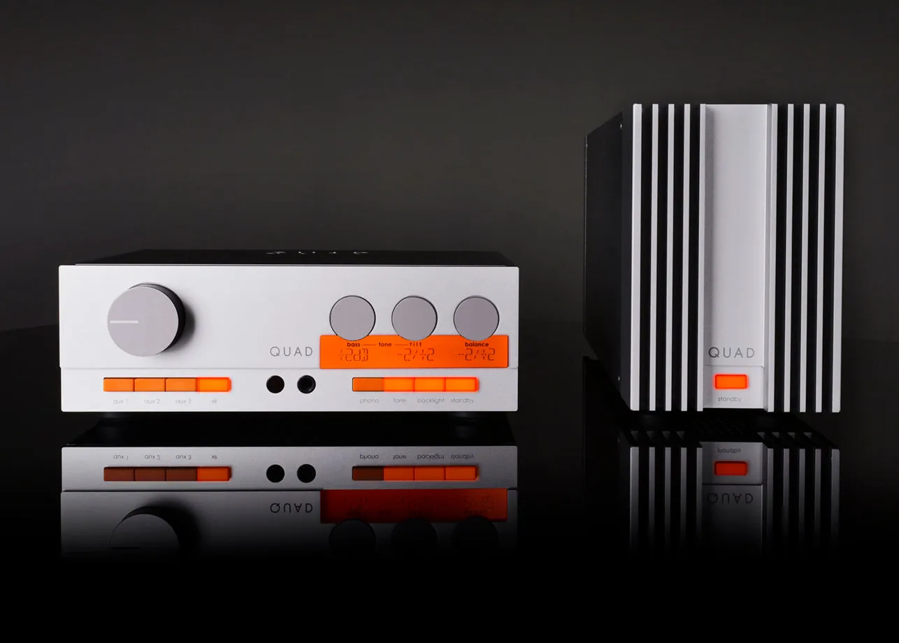
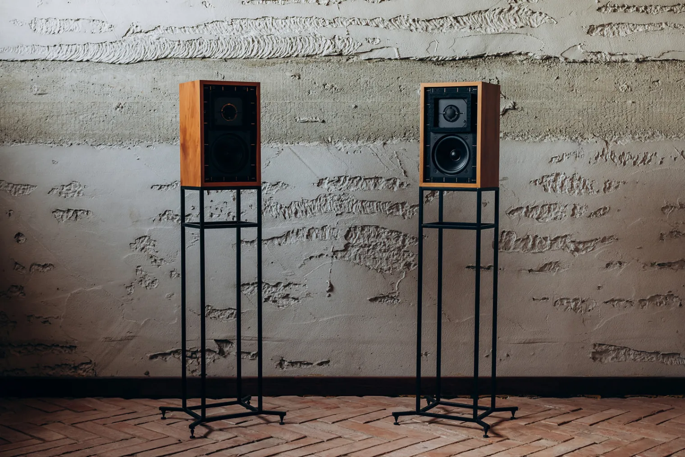
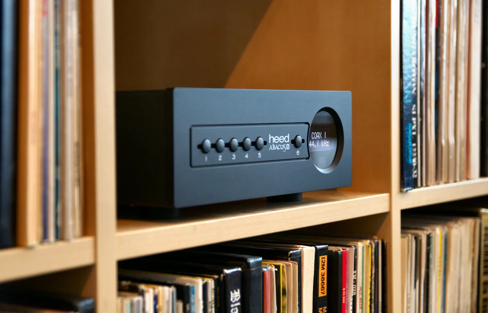
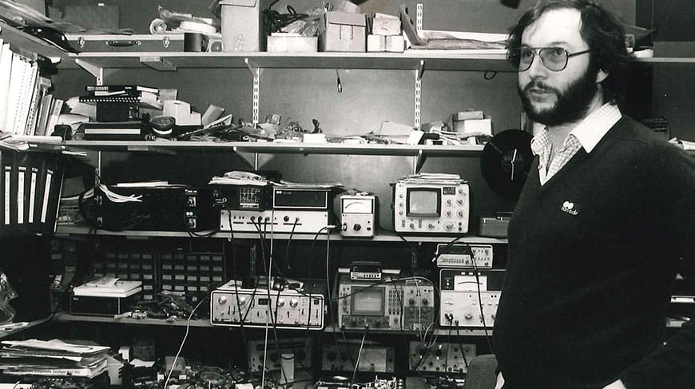
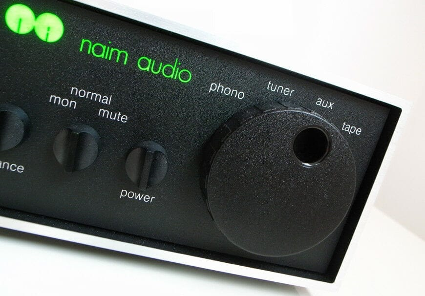

Blog
Stories about hi-fi equipment, and what it takes to use it with a streamer today, checked and dated like the guides.

The Quad 33 and 303: Quad's first transistor amplifiers, and their return in 2024
Quad's transistor pair of 1967: its DIN inputs and figures, the input a DAC should use, and what the versions of 2024 changed.

The BBC LS3/5A: a monitor made for outside-broadcast vans, and its 11-ohm Rogers version
The BBC's small monitor of 1974, its 11-ohm revision of 1987, and what a Rogers pair asks of a NAIT 2 and a streamer.

The Heed Abacus: a Hungarian DAC, and the DSD it plays only at full volume
Heed's DAC of 2017: what it takes, what Linux sees of it, and why its DSD stops when its USB volume drops below 0 dB.

How old is your Naim? Serial numbers and years, 1982 to 2022
The year each Naim serial number was made, from Naim's own table to 2022: its overlaps explained, and how to date anything newer.

The Naim NAIT 2: its figures, its sound, and the NAITs that followed
Naim's small 1988 amplifier: its inputs and real power, what reviewers heard, buying and servicing one, and every NAIT since.